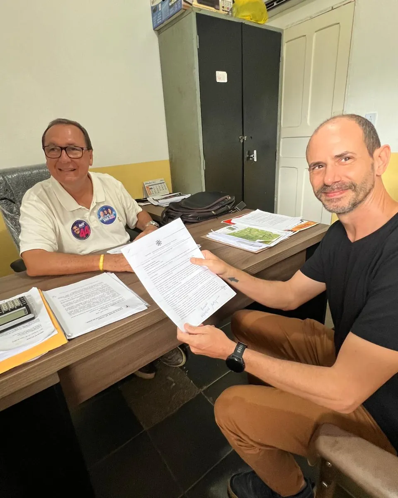

Como o cálculo do imposto foi alterado no Sargi, no Pé de Serra e em Serra Grande — e o que isso significa para você. Material informativo da ASMOVISA.
A ASMOVISA preparou este material para ajudar cada morador e proprietário a entender o forte aumento do IPTU em 2025 e 2026: como ele foi feito e o que representa no seu bolso. As informações reunidas aqui têm base nas próprias leis e no decreto do município e foram complementadas por uma conversa de um grupo de moradores com a administração regional (administrador Moacyr), que ajudou a esclarecer pontos como os descontos aplicados.
Este documento tem caráter informativo e não substitui orientação jurídica individual — reúne, em linguagem simples, o que qualquer cidadão pode verificar nos atos oficiais.
ATUALIZAÇÃO — SETEMBRO DE 2026
Prazo prorrogado: o vencimento do IPTU 2026 foi adiado para 30 de outubro, com desconto para pagamento à vista e parcelamento em 3 vezes com 10% de desconto até essa data (Decreto nº 1.257/2026).
Proposta entregue: em 4 de setembro, a ASMOVISA protocolou na Prefeitura uma proposta formal (Ofício 02/2026) para um reajuste gradual e previsível, construída pelo Grupo de Trabalho do IPTU.
Reunião com a Prefeitura: em 13 de setembro, a prefeita Magnólia Barreto, o administrador de Serra Grande, Moacir Leite, e vereadores se reuniram com a comunidade no Sargi. Ficou combinado buscar convergência entre as propostas, revisar as alíquotas e construir uma nova PGV por lei, com uma nova reunião após o período eleitoral. Veja como foi a reunião ou os detalhes na seção 9.
Novos valores comunicados: após a reunião, a Prefeitura comunicou à diretoria da ASMOVISA os valores por m² que passarão a valer para o Sargi e o Pé de Serra. O novo decreto deve ser publicado ainda esta semana. Veja a tabela e o que isso significa.
Afinal, o que é o IPTU — e por que ele importa?
O IPTU (Imposto Predial e Territorial Urbano) é cobrado pela Prefeitura sobre os imóveis da cidade e é uma das principais fontes de recursos próprios do município. É com esse dinheiro que se pagam serviços e melhorias que chegam ao nosso dia a dia: pavimentação, iluminação, drenagem, limpeza, praças e manutenção do bairro. Por isso, pagar o IPTU é importante — e é justamente o que nos dá legitimidade para cobrar do poder público que esses recursos voltem em benfeitorias para o Sargi e o Pé de Serra.
Segundo a Prefeitura, hoje apenas cerca de 20% a 30% dos contribuintes do Sargi pagam o imposto; quando poucos pagam, o município arrecada menos, todos perdem em serviços e a comunidade fica mais fraca para exigir melhorias.
Questionar a forma como o aumento foi feito não é ser contra o imposto: queremos um IPTU justo, transparente e que se traduza em qualidade de vida no bairro.
1. Uma mudança em três atos
O aumento não veio de um único ato. Ele foi construído em três etapas, e entender a ordem delas é a chave para entender o problema:
Lei 546/2014 — criou a Planta Genérica de Valores (PGV), a tabela que define o valor do metro quadrado usado para calcular o IPTU. Ela foi aprovada por lei, com regras e limites de aumento.
Lei 712/2025 (10/12/2025) — alterou o Código Tributário do município para permitir que a PGV passe a ser definida por decreto do Poder Executivo, e não mais por lei.
Decreto 1203/2025 (30/12/2025) — publicou os novos valores da PGV para 2026, já usando essa nova permissão.
Em resumo: primeiro mudaram a regra — quem pode definir os valores — e, três semanas depois, publicaram os novos valores por decreto.
2. O que a lei de 2014 garantia
A Lei 546/2014 não deixava os aumentos ao critério do momento. Ela trazia proteções para o contribuinte:
Os valores do metro quadrado eram fixados por lei, nos anexos da própria Lei 546/2014.
O reajuste do IPTU pela nova base ficou limitado a 20% em 2015 e, nos anos seguintes, a até 20% ao ano — e somente com autorização da Câmara Municipal (art. 3º).
Os fatores de correção não podiam aumentar ou reduzir o valor venal em mais de 25% (art. 140, §2º).
Ou seja: aumentos previsíveis, graduais e aprovados pelos vereadores.
3. O que mudou com a Lei 712/2025 e o Decreto 1203/2025
A Lei 712/2025 alterou o art. 139 do Código Tributário para dizer que a PGV “será publicada em ato do Poder Executivo” (isto é, por decreto), apoiando-se na Emenda Constitucional 132/2023, e revogou os valores que estavam fixados na lei. Em seguida, o Decreto 1203/2025 publicou a nova tabela.
Há um detalhe importante no decreto: ele se chama “atualiza monetariamente” a PGV — mas os valores publicados não são correção monetária. São valores muito mais altos.
A correção monetária de um ano gira em torno de 5%. Chamar de “atualização monetária” um salto de quase 6 vezes no terreno e de quase 7 vezes na construção não corresponde ao que os números mostram.
O que a Prefeitura alega — o decreto justifica a mudança pela busca de “justiça fiscal”, “isonomia tributária”, adequação ao mercado imobiliário e proteção às famílias de baixa renda. São objetivos legítimos. A questão levantada pela comunidade é outra: a forma como foi feito (por decreto) e a falta de regras claras — pontos detalhados a seguir.
4. Quanto isso pesa no seu bolso
Para tornar o efeito concreto, usamos um lote real de referência no Sargi: 376,29 m² de terreno e 169,16 m² de construção (padrão A). Vejamos primeiro como o cálculo seria montado se a lei de 2014 tivesse sido aplicada.
Tabela 1 — Como o cálculo seria montado pela lei (caminho legal)
Partindo dos valores de 2014, aplicam-se os aumentos que a lei permitia (dois reajustes de até 20%) e a correção monetária. Passo a passo:
Etapa do cálculo
Valor m² — terreno
Valor m² — construção
Base de 2014 (Lei 546)
R$ 120,00
R$ 144,00
+ 20% (1º reajuste permitido por lei)
R$ 144,00
R$ 172,80
+ 20% (2º reajuste permitido por lei)
R$ 172,80
R$ 207,36
+ correção monetária (4,26%)
R$ 180,16
R$ 216,19
→ IPTU de 2026 por esse caminho (alíquota de 1%): aproximadamente R$ 1.044,36
Mesmo somando todos os aumentos que a lei permitia, o IPTU de 2026 desse lote ficaria em torno de R$ 1.044.
Tabela 2 — A situação atual (mesmo lote)
2025 (valores antigos)
2026 — valor cheio do decreto
2026 — cobrado na guia (com desconto)
Valor do m² — terreno
R$ 120,00
R$ 700,00
R$ 240,10
Valor do m² — construção
R$ 144,00
R$ 1.000,00
R$ 1.000,00
Base de cálculo (valor venal)
R$ 69.513,84
R$ 432.563,00
R$ 259.507,23
IPTU (alíquota de 1%)
R$ 695,14
R$ 4.325,63
R$ 2.595,07
Taxa do lixo
R$ 33,83
R$ 33,83
R$ 33,83
Total
R$ 728,97
R$ 4.359,46
R$ 2.628,90
Com 20% de desconto à vista
R$ 583,18
—
R$ 2.103,12
Traduzindo: em 2025 o IPTU desse lote era cerca de R$ 583. Pelo valor cheio do decreto, saltaria para cerca de R$ 4.359 — quase 7,5 vezes mais. Com o desconto aplicado na guia, ficou em cerca de R$ 2.103 — ainda 3,6 vezes o valor de 2025. E, pelo caminho legal, o IPTU de 2026 seria de aproximadamente R$ 1.044.
5. O desconto que preocupa
O Decreto 1203/2025, no art. 3º, autoriza um desconto de até 70% sobre o valor venal do imóvel para Serra Grande. À primeira vista parece um alívio — e é o que fez a cobrança do exemplo cair de R$ 4.359 para R$ 2.103. O problema está em como esse desconto funciona:
É concedido sob requerimento e “a critério da Administração Pública”, inclusive em “outros casos devidamente justificados” — ou seja, sem uma regra objetiva e fechada.
Não aparece de forma transparente na guia. No exemplo, o m² do terreno foi reduzido de R$ 700 para R$ 240 (cerca de 65,7%), mas a guia não informa em que zona o imóvel está, qual o percentual aplicado, nem a base legal.
O que se concede por decreto pode ser reduzido ou retirado a cada ano. Vizinhos em situação parecida podem acabar pagando valores diferentes.
É por isso que o valor do próximo ano é imprevisível: ele depende de um desconto que hoje não tem critério fixo.
6. O ponto jurídico, em resumo
Segundo advogados tributaristas, atualizar a Planta Genérica de Valores por decreto — e não por lei — é juridicamente questionável. Os principais argumentos apontados são:
A Constituição exige lei para aumentar tributo (princípio da legalidade tributária).
A Súmula 160 do Superior Tribunal de Justiça (STJ) diz que o município não pode reajustar o IPTU por decreto acima da correção monetária.
A Prefeitura se apoia na Emenda Constitucional 132/2023, que passou a permitir ao Executivo “atualizar” a base de cálculo do IPTU conforme critérios definidos em lei municipal. O debate está justamente aí: “atualizar” não é o mesmo que “aumentar” centenas por cento.
Este é apenas um resumo informativo — qualquer decisão de contestar valores deve ser tomada com orientação jurídica.
7. Como ler a sua guia de IPTU
Na sua guia, o cálculo está no quadro DADOS CADASTRAIS. Veja onde ficam os valores que importam:
“Área do terreno” e “Valor m² terreno”; “Área da edificação” e “Valor m² edificação”.
“Valor venal” (a base de cálculo), “Alíquota” e “Valor do desconto”.
Multiplique a área pelo valor do m² e compare com o decreto. Se o valor do m² na sua guia for menor que o do decreto, você recebeu um desconto — guarde a guia, porque ele pode mudar no ano seguinte.
8. Atenção: erros de metragem ou localização são outro problema
Tem sido comum guias virem com a metragem do terreno ou da construção, ou ainda a localização, erradas. Isso é diferente do aumento da PGV: é um erro de cadastro no seu imóvel específico, e não uma questão da política de valores.
Nesses casos, o caminho é ir à Prefeitura corrigir. Corrigir o cadastro faz parte do processo. Confira na guia se a área do terreno, a área construída e a localização (bairro/zona) estão certas; se houver erro, leve os documentos do imóvel ao setor de tributos e peça a correção.
9. O que aconteceu desde então: a proposta da ASMOVISA e a reunião com a Prefeitura
Em agosto de 2026, moradores e a ASMOVISA formaram um Grupo de Trabalho do IPTU (GT IPTU) para construir uma proposta coletiva. Em 4 de setembro, a associação protocolou na Prefeitura uma proposta formal (Ofício nº 02/2026), recebida pelo administrador de Serra Grande. Em 13 de setembro, a prefeita Magnólia Barreto, o administrador Moacir Leite e vereadores se reuniram com a comunidade no Sargi. Veja o que foi apresentado e combinado.

4 de setembro de 2026: Eduardo Caetano, presidente da ASMOVISA, entrega a proposta ao administrador de Serra Grande, Moacir Leite, que assinou o recebimento.
O que a ASMOVISA apresentou
O problema: aumentos abruptos, acúmulo de dívidas e risco à permanência de moradores antigos no bairro. A carta reconhece os avanços já obtidos no diálogo (prazo e descontos do Decreto nº 1.257/2026), mas aponta que o que preocupa é a forma do reajuste: repentino, de proporção muito elevada e sem estudo técnico que o justifique.
A proposta: partir do valor de referência de 2024 — o último antes da sequência de aumentos — e aplicar, a cada ano, o acréscimo de até 20% previsto no art. 3º da Lei 546/2014 (uma vez de 2024 para 2025 e outra de 2025 para 2026), mais a correção pelo IPCA. Para o lote de referência deste material (376 m² de terreno e 169 m² de construção), o IPTU de 2026 ficaria em R$ 1.090,56, contra R$ 2.595,07 cobrados com o desconto do decreto. Para os anos seguintes, o mesmo critério: correção monetária mais até 20% ao ano, para que cada morador saiba com antecedência o que esperar.
O pedido: que uma nova Planta Genérica de Valores seja aprovada por lei, precedida de estudo técnico, audiência pública e consulta à população — e não por decreto. Até lá, valores uniformes para todo o Distrito, como na Lei 546/2014.
O que a Prefeitura respondeu (segundo o administrador Moacir Leite)
A Lei de 2014 fixava R$ 120/m² de terreno no Sargi, mas esse valor não teria sido aplicado pelas gestões anteriores.
Para 2025, os valores teriam sido atualizados pelo IPCA: de R$ 120 para R$ 228,11/m² (terreno) e de R$ 144 para R$ 273,73/m² (construção).
Para 2026, foram lançados R$ 240/m² (terreno) e R$ 1.000/m² (construção). O administrador assumiu a responsabilidade e reconheceu que o erro foi o salto excessivo em dois anos, e não os valores em si.
Contraproposta da Prefeitura: atualizar os valores de 2014 pelo IPCA, o que resultaria em cerca de R$ 1.320 para o mesmo lote de referência — R$ 230 acima da referência da ASMOVISA. O administrador sugeriu buscar a convergência entre as duas propostas.
Alíquotas informadas como vigentes: 2% para terreno sem construção e 1% para terreno com construção. O administrador reconheceu que a revisão das alíquotas é um ponto legítimo de discussão.
A prefeita afirmou disposição para ouvir a comunidade e buscar um denominador comum.
O que a comunidade pediu
Uma comissão participativa, estudo de mercado e votação dos valores.
Aumentos graduais e alíquotas entre 0,5% e 1%, com revisão da alíquota de 2% para terrenos.
Previsibilidade, comunicação prévia e participação da comunidade antes de decisões de impacto.
Uma solução que contemple também quem não tem condições de pagar.
Compromissos e encaminhamentos
Buscar a convergência entre a referência da ASMOVISA (cerca de R$ 1.090) e a da Prefeitura (cerca de R$ 1.320).
Incluir a revisão das alíquotas na discussão para o próximo exercício.
Construir uma nova PGV aprovada por lei, com debate público e participação da Câmara.
Realizar uma nova reunião entre ASMOVISA, Prefeitura e Câmara após o período eleitoral (previsão de cerca de 20 dias).
Os vereadores Jardel e Adé se comprometeram a participar das reuniões da ASMOVISA e a acompanhar a pauta na Câmara.
Importante: até o momento não há prazo definido nem decisão final sobre a nova lei, o valor venal, a alíquota ou o índice de atualização. O que existe são compromissos de diálogo e uma nova reunião a ser marcada. A ASMOVISA seguirá acompanhando e informando a comunidade.
10. O que a Justiça já decidiu
Alguns moradores entraram individualmente com mandados de segurança contra a cobrança. Em pelo menos um caso, o Tribunal de Justiça da Bahia (TJBA), em decisão de agravo de instrumento, deu razão ao morador, com base no princípio constitucional da vedação ao confisco, citando precedente no próprio município que limita o reajuste do IPTU à correção monetária.
Atenção: trata-se de uma decisão provisória, tomada no curso do processo — não é a sentença final. E vale apenas para quem entrou na Justiça.
A ASMOVISA não pretende entrar com ações judiciais coletivas. A decisão de contestar a cobrança na Justiça é individual, de cada morador, e deve ser tomada com orientação jurídica.
11. O que você pode fazer
Atitudes simples — e que fazem diferença:
Fique atento ao prazo: o IPTU 2026 vence em 30 de outubro, com desconto à vista e parcelamento em 3x com 10% de desconto até essa data.
Confira a sua guia e compare os valores do m² com os do decreto.
Verifique metragem e localização — se houver erro, vá à Prefeitura corrigir.
Guarde as guias de anos anteriores (2023, 2024 e 2025) para comparar a evolução da cobrança — elas também ajudam o GT a embasar a proposta da comunidade.
Procure o setor de tributos para esclarecer os valores e o desconto aplicado ao seu imóvel — e busque orientação jurídica se quiser contestar.
Participe da ASMOVISA e do GT IPTU — quanto mais moradores informados e organizados, mais força para dialogar com o poder público.
Quer fortalecer esse trabalho? Entre no Grupo de Trabalho do IPTU e cadastre-se como associado(a).
Fontes: Lei Municipal 546/2014; Lei Municipal 712/2025; Decreto Municipal 1203/2025; guias de IPTU 2024–2026 (Uruçuca/BA); Ofício ASMOVISA 02/2026 (proposta entregue à Prefeitura em 4/9/2026); reunião pública com a Prefeitura no Sargi em 13/9/2026; decisão do TJBA em agravo de instrumento.
ASMOVISA — Material informativo · Uruçuca/BA · Atualizado em setembro de 2026